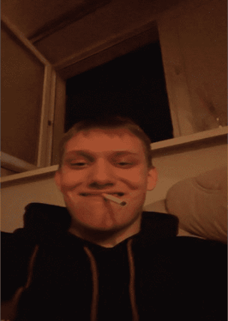

Filip Beza ps.Obsikany
Urodzony 24 grudnia 1990 roku nie wiadomo gdzie. Zamieszkały w Olsztynie na osiedlu im. Twojej starej.
Nieoficjalnie 17 letni (konto w social mediach mówi, że ma 33 lata). Niezwykle grozna persona ze względu na
swoje usposobienie bojowe i sportową przeszłość, aktualnie trenuje sporty walki, chociaż kilka lat temu występował
w Stomilu na pozycji Lewego obrońcy, gdzie był najjaśniejszym punktem drużyny. W wolnych chwilach pije alkohol i pali dobrego
bucha. Jego pseudonim wywodzi się z meczów rozgrywanych na orliku przy sp34. Kiedy to musiał stanąć naprzeciwko piłkarza drużyny
przeciwnej Szymon Dziężyca poprostu sikał w gacie ze strachu.

Chillowanie SznycBomby
Osiągnięcia
- Dał radę wypić pół specjala, co dla wielu jest już wyczynem.
- Jest lepszy od Jana w Leauge of Legends mimo tego, że gra średnio raz na miesiąc.
Ważne wydarzenia
- Degustacja rosołu
- Mecz olsztyńsko-piloński w Olsztynie
Ciekawostki
- Gdyby kontynuował karierę piłkarską dziś zastąpiłby Ferlanda Mendyego na lewej obronie w Realu Madryt.
- Jest chorągiewką.